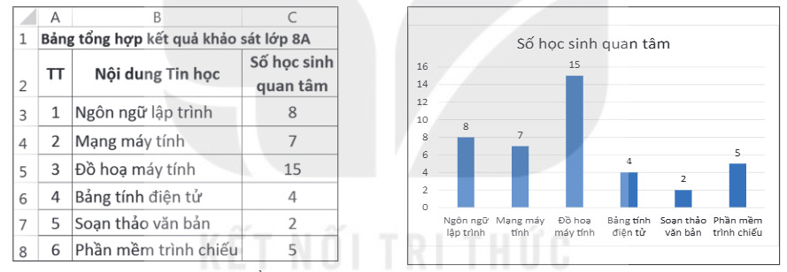
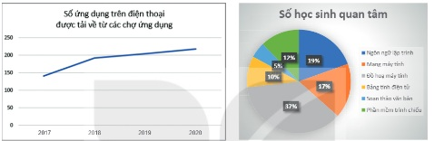
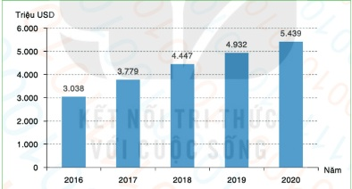

Dành cho giáo viên
Theo dõi lớp
| Học sinh / Nhóm | Đã nộp | Cập nhật |
|---|
Bước 1
1 Khởi động
Khởi động Bảng hay biểu đồ?
Hình 7.1 và Hình 7.2 mô tả hai cách trình bày kết quả khảo sát những nội dung Tin học mà các bạn học sinh lớp 8A muốn tìm hiểu thêm.

Ghi bài Khởi động
Sau khi thầy cô chốt, em chép nội dung dưới đây vào vở.
Bước 2 · Hình thành kiến thức mới
2.1 Trình bày dữ liệu bằng biểu đồ
Hoạt động 1 Trình bày dữ liệu bằng biểu đồ
Đọc hiểu Các loại biểu đồ
Đọc mục 1 (SGK trang 32–33). Biểu đồ được sử dụng để minh hoạ dữ liệu một cách trực quan, giúp em dễ so sánh hoặc dự đoán xu hướng tăng hay giảm của dữ liệu. Có nhiều loại biểu đồ, mỗi loại có một ý nghĩa riêng:
- Biểu đồ cột thường được sử dụng để so sánh dữ liệu.
- Biểu đồ đoạn thẳng thường được sử dụng để quan sát xu hướng tăng giảm của dữ liệu theo thời gian hay quá trình nào đó (Hình 7.3).
- Biểu đồ hình quạt tròn rất hữu ích trong trường hợp cần so sánh các phần với tổng thể (Hình 7.4).

Bảng tạo biểu đồ mô phỏng
Câu hỏi SGK trang 33
Ghi bài 1. Các loại biểu đồ
Sau khi thầy cô chốt, em chép nội dung dưới đây vào vở.
Bước 2 · Thực hành
2.2 Thực hành: Tạo biểu đồ
Thực hành a) Tạo biểu đồ cột
Nhiệm vụ: tạo biểu đồ cột so sánh trực quan số học sinh quan tâm các nội dung Tin học như Hình 7.2.
Bước 1. Khởi động phần mềm bảng tính và nhập dữ liệu như bảng trong Hình 7.1. Bước 2. Chọn vùng dữ liệu B2:C8. Bước 3. Trong thẻ Insert, tại nhóm Charts, chọn lệnh Insert Column or Bar Chart. Bước 4. Trong nhóm biểu đồ 2-D Column, chọn kiểu Clustered Column. Bước 5. Bổ sung thông tin cho biểu đồ: chọn biểu đồ, chọn nút lệnh Chart Elements ở góc trên bên phải, chọn các loại thông tin (Hình 7.6).
Bước 1. Khởi động phần mềm bảng tính và nhập dữ liệu như bảng trong Hình 7.1. Bước 2. Chọn vùng dữ liệu B2:C8. Bước 3. Trong thẻ Insert, tại nhóm Charts, chọn lệnh Insert Column or Bar Chart. Bước 4. Trong nhóm biểu đồ 2-D Column, chọn kiểu Clustered Column. Bước 5. Bổ sung thông tin cho biểu đồ: chọn biểu đồ, chọn nút lệnh Chart Elements ở góc trên bên phải, chọn các loại thông tin (Hình 7.6).
Thực hành b) Tạo biểu đồ hình quạt tròn
Nhiệm vụ: tạo biểu đồ hình quạt tròn như Hình 7.4 để so sánh trực quan tỉ lệ phần trăm số học sinh của mỗi nội dung Tin học trên tổng số học sinh khảo sát.
Bước 1. Chọn vùng dữ liệu B2:C8. Bước 2. Trong thẻ Insert, nhóm Charts, chọn lệnh Insert Pie or Doughnut Chart. Bước 3. Trong nhóm 2-D Pie, chọn kiểu Pie. Bước 4. Bổ sung thông tin: để hiển thị nhãn dữ liệu là tỉ lệ phần trăm, chọn More Options… (Hình 7.7), trong khung Label Options đánh dấu chọn Percentage.
Bước 1. Chọn vùng dữ liệu B2:C8. Bước 2. Trong thẻ Insert, nhóm Charts, chọn lệnh Insert Pie or Doughnut Chart. Bước 3. Trong nhóm 2-D Pie, chọn kiểu Pie. Bước 4. Bổ sung thông tin: để hiển thị nhãn dữ liệu là tỉ lệ phần trăm, chọn More Options… (Hình 7.7), trong khung Label Options đánh dấu chọn Percentage.
Ghi bài 2. Tạo biểu đồ
Sau khi thầy cô chốt, em chép nội dung dưới đây vào vở.
Bước 3
3 Luyện tập
Luyện tập 1 Thời gian sử dụng thiết bị số
Mở tệp TGSDThietbiso.xlsx đã lưu ở Bài 6. Dùng hàm SUM để tính tổng số học sinh sử dụng thiết bị số trong mỗi khoảng thời gian (kết quả tương tự Hình 7.8: Không sử dụng 68; Dưới 1 giờ 131; 1–2 giờ 146; 3–4 giờ 72; Từ 5 giờ trở lên 12) rồi vẽ biểu đồ cột và biểu đồ hình quạt tròn. Có thể kiểm tra nhanh trên bảng tạo biểu đồ mô phỏng ở mục 1.
Luyện tập 2 Doanh thu công nghiệp phần mềm

Ghi bài Luyện tập
Sau khi thầy cô chốt, em chép nội dung dưới đây vào vở.
Bước 4
4 Vận dụng
Vận dụng Biểu đồ đoạn thẳng
Ghi bài Vận dụng
Sau khi thầy cô chốt, em chép nội dung dưới đây vào vở.